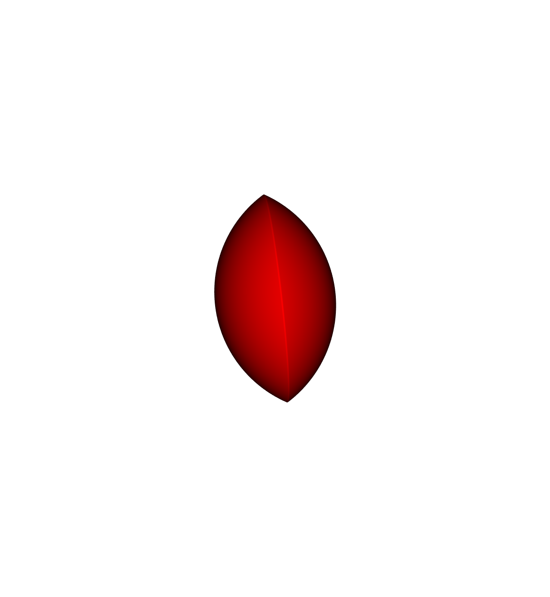
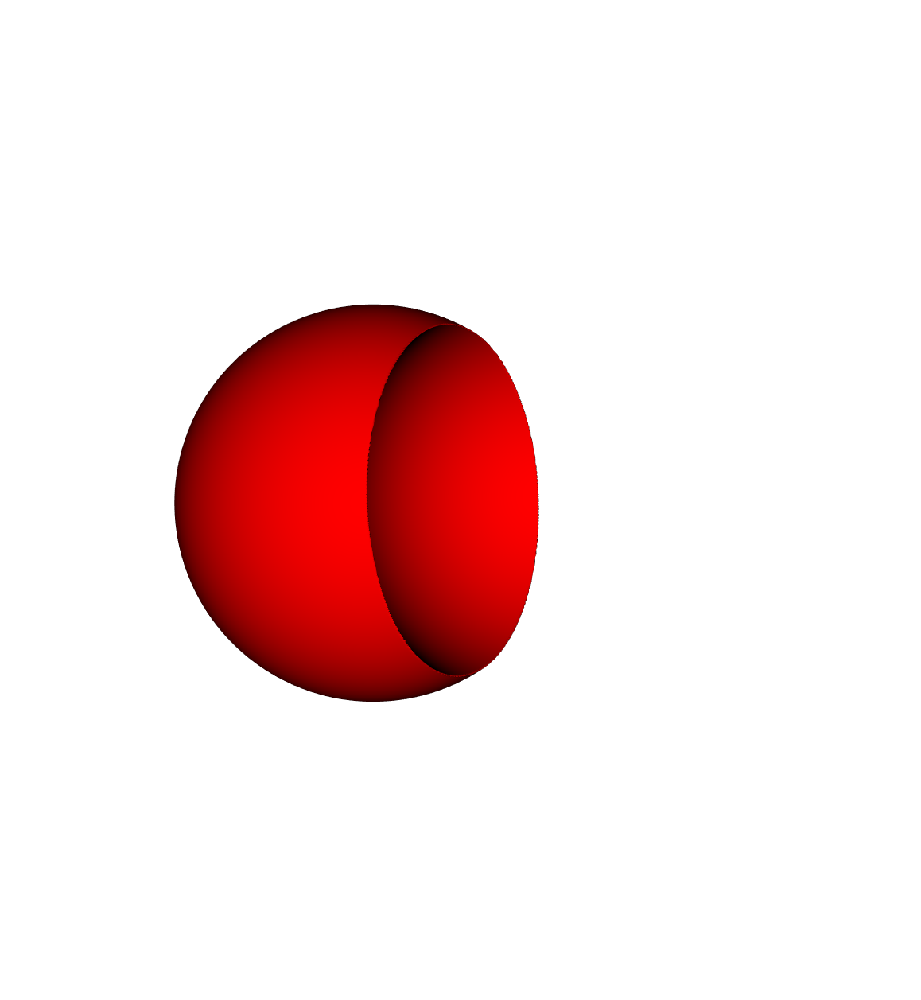
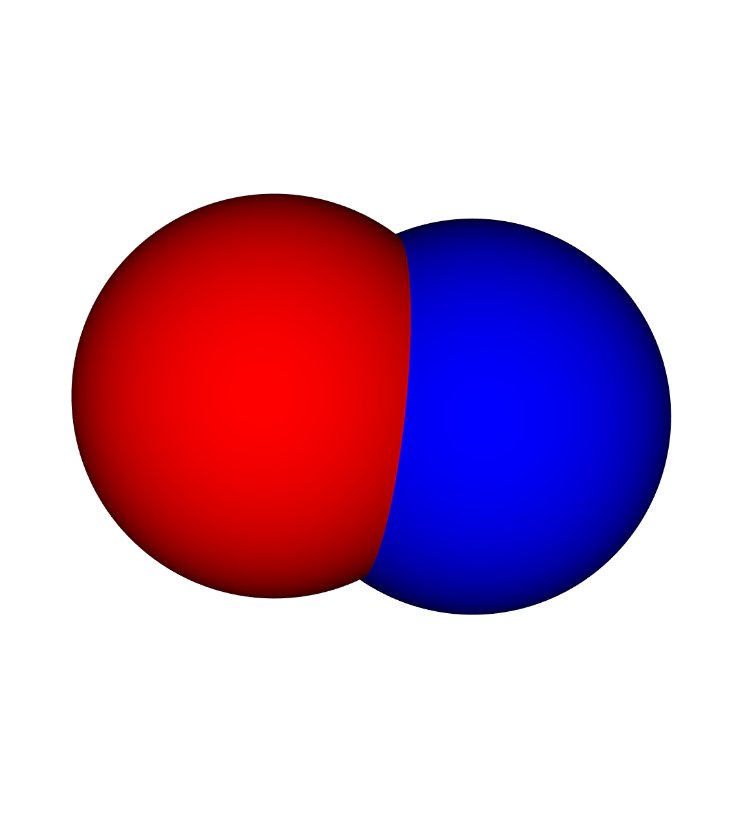
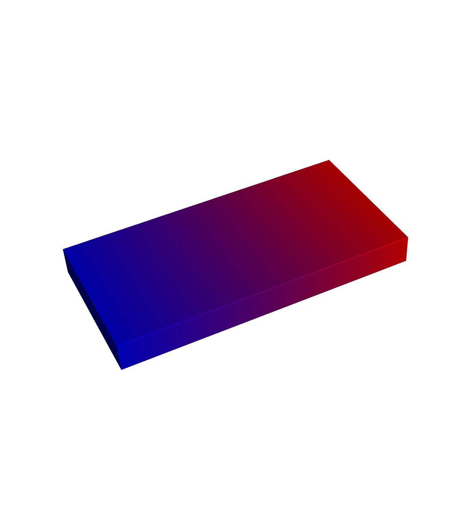

Getting Started with OpenVCAD¶
This tutorial will guide you through designing basic 3D objects using
OpenVCAD. We will cover how to create objects with both single and multiple
materials using Python and the pyvcad library. All code is accessible in the
examples directory.
Note
This guide assumes you have OpenVCAD installed. See the Installation page if you haven’t set things up yet.
Hello World¶
Let’s start with the simplest possible OpenVCAD script. Going line by line:
import pyvcad as pvimports the pyvcad library with the aliaspv.import pyvcad_rendering as vizimports the rendering module for visualization.pv.default_materialsloads material configurations that map material names and colors for visualization, converting named materials like “red” or “blue” into integer IDs that OpenVCAD understands.pv.RectPrism(...)creates a 10mm cube centered at the origin with the “red” material.
import pyvcad as pv
import pyvcad_rendering as viz
materials = pv.default_materials
center_point = pv.Vec3(0, 0, 0)
dimensions = pv.Vec3(10, 10, 10)
root = pv.RectPrism(center_point, dimensions, materials.id("red"))
viz.Render(root, materials)

Composition¶
OpenVCAD constructs objects using tree structures based on Constructive Solid Geometry (CSG). Nodes are classified by how many children they accept:
Leaf nodes define basic geometry (no children).
Unary nodes accept one child (
.set_child()).Binary nodes accept exactly two children (
.set_left()/.set_right()).N-ary nodes accept many children (
.add_child()).
Union¶
Two overlapping spheres combined into a single object:
import pyvcad as pv
import pyvcad_rendering as viz
materials = pv.default_materials
radius = 5
left_sphere = pv.Sphere(pv.Vec3(-radius/2, 0, 0), radius, materials.id("red"))
right_sphere = pv.Sphere(pv.Vec3(+radius/2, 0, 0), radius, materials.id("red"))
root = pv.Union()
root.add_child(left_sphere)
root.add_child(right_sphere)
viz.Render(root, materials)

Intersection¶
The same overlapping spheres, intersected to keep only the shared volume:
import pyvcad as pv
import pyvcad_rendering as viz
materials = pv.default_materials
radius = 5
left_sphere = pv.Sphere(pv.Vec3(-radius/2, 0, 0), radius, materials.id("red"))
right_sphere = pv.Sphere(pv.Vec3(+radius/2, 0, 0), radius, materials.id("red"))
root = pv.Intersection(False, [left_sphere, right_sphere])
viz.Render(root, materials)

Difference¶
Subtract the right sphere from the left:
import pyvcad as pv
import pyvcad_rendering as viz
materials = pv.default_materials
radius = 5
left_sphere = pv.Sphere(pv.Vec3(-radius/2, 0, 0), radius, materials.id("red"))
right_sphere = pv.Sphere(pv.Vec3(+radius/2, 0, 0), radius, materials.id("red"))
root = pv.Difference(left_sphere, right_sphere)
viz.Render(root, materials)

Complex CSG Example¶
Combining multiple operations to create a rounded cube with cylindrical holes:
import pyvcad as pv
import pyvcad_rendering as viz
materials = pv.default_materials
base_cylinder = pv.Cylinder(pv.Vec3(0,0,0), 2, 9, materials.id("gray"))
root = pv.Difference(
pv.Intersection(False, [
pv.RectPrism(pv.Vec3(0,0,0), pv.Vec3(8,8,8), materials.id("gray")),
pv.Sphere(pv.Vec3(0,0,0), 5.5, materials.id("gray"))
]),
pv.Union(False, [
base_cylinder,
pv.Rotate(90,0,0, pv.Vec3(0,0,0), base_cylinder),
pv.Rotate(0,90,0, pv.Vec3(0,0,0), base_cylinder)
])
)
viz.Render(root, materials)

Multi-material Design¶
OpenVCAD’s true power lies in its multi-material design capabilities. Using the same tree structure, we can define objects with multiple materials.
Basic Multi-material¶
Two overlapping spheres with different materials. In the overlapping region, the first child’s material takes priority by default:
import pyvcad as pv
import pyvcad_rendering as viz
materials = pv.default_materials
radius = 5
left_sphere = pv.Sphere(pv.Vec3(-radius/2, 0, 0), radius, materials.id("red"))
right_sphere = pv.Sphere(pv.Vec3(+radius/2, 0, 0), radius, materials.id("blue"))
root = pv.Union()
root.add_child(left_sphere)
root.add_child(right_sphere)
viz.Render(root, materials)

Blended Intersection¶
Set the first parameter of Intersection to True to combine and normalize
all child material distributions. The overlapping region becomes an equal
blend of red and blue:
import pyvcad as pv
import pyvcad_rendering as viz
materials = pv.default_materials
radius = 5
left_sphere = pv.Sphere(pv.Vec3(-radius/2, 0, 0), radius, materials.id("red"))
right_sphere = pv.Sphere(pv.Vec3(+radius/2, 0, 0), radius, materials.id("blue"))
root = pv.Intersection(True, [left_sphere, right_sphere])
viz.Render(root, materials)

Functional Grading with FGrade¶
The FGrade node creates multi-material spatial gradients using overlapping
probability density functions (PDFs). Each material gets a PDF that defines
its volume fraction at every point. At any location, all PDFs must sum to 1.
This example creates a linear gradient from blue to red across a rectangular bar:
import pyvcad as pv
import pyvcad_rendering as viz
materials = pv.default_materials
bar = pv.RectPrism(pv.Vec3(0,0,0), pv.Vec3(100,50,10), materials.id("gray"))
root = pv.FGrade(["x/100 + 0.5", "-x/100 + 0.5"],
[materials.id("red"), materials.id("blue")], False)
root.set_child(bar)
viz.Render(root, materials)
# Export the object for 3D printing or simulation
viz.Export(root, materials)

Several spatial variables are available in the math expressions, including
x, y, z coordinates as well as spherical and cylindrical coordinates.
See the Math Expression Documentation for the
full reference.
Next Steps¶
Explore the examples
Read the Python API Reference
Read our publications